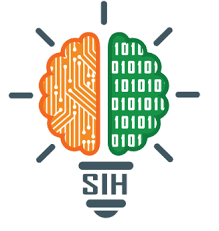

Who I Am
Hello! I'm a passionate and dedicated student currently pursuing my degree in computer science. My journey in technology began during my school years, where I discovered my love for problem-solving and innovation.
I believe in continuous learning and pushing the boundaries of what's possible. Through various competitions and projects, I've developed strong technical skills and a keen interest in emerging technologies.
When I'm not coding, you can find me exploring new technologies, participating in hackathons, or collaborating with fellow developers on exciting projects.
My Educational Journey
High School Education
Completed my secondary education with a focus on Science and Mathematics. This is where I first discovered my passion for logical thinking and problem-solving. Achieved excellent grades and actively participated in science exhibitions and coding competitions.
Senior Secondary (12th Grade)
Specialized in Physics, Chemistry, and Mathematics with Computer Science as an additional subject. This period solidified my interest in technology and programming. Developed foundational programming skills and participated in various tech-related activities.
Bachelor's Degree in Computer Science
Currently pursuing my undergraduate degree in Computer Science Engineering. Focusing on software development, algorithms, data structures, and emerging technologies. Actively involved in coding clubs, technical societies, and various project collaborations.
Major Achievements
Smart India Hackathon (SIH)
Participated in India's biggest hackathon, Smart India Hackathon. Worked on innovative solutions to real-world problems presented by government organizations. This experience enhanced my problem-solving skills and exposed me to cutting-edge technologies and collaborative development practices.
Anveshna Research Program
Actively participated in the Anveshna research initiative, focusing on innovative research projects and technological solutions. This program helped me develop analytical thinking, research methodologies, and the ability to work on long-term projects with real-world applications.